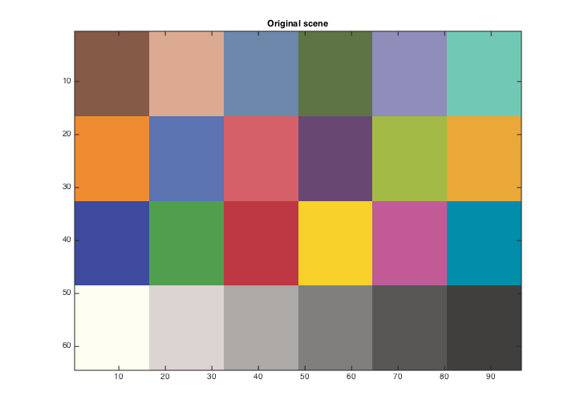
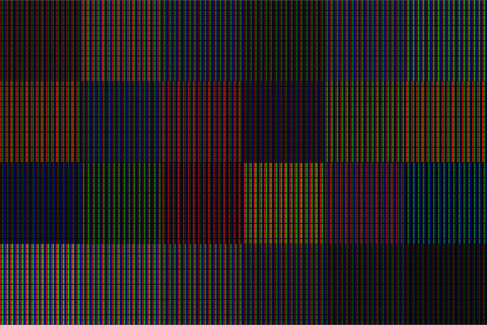

t_displayScene2Display
This script illustrates how to convert data in a scene into a set of RGB values for a particular display.
NOTES: 1) Need to write code to move the dImage back to a scene 2) It seems a little odd to gamma correct using the sRGB standard rather than the dsiplay gamma curve, after having converted from XYZ to linear RGB using spectral measurements of the display primaries. At least that is how I think the code is currently working.
(BW) Stanford Vista Group, 2014
Contents
Init
ieInit;
Make a MCC scene, the default
scene = sceneCreate;
% vcAddObject(scene); sceneWindow;
Get out XYZ coordinates, the easy way
And then dsisplay the sRGB version
XYZ = sceneGet(scene,'xyz'); vcNewGraphWin; image(xyz2srgb(XYZ)); title('Original scene')
Create a display
d = displayCreate('LCD-Apple');
Get color correction matrices out of display object
These transform to linear rgb values (no gamma accounted for) and back again.
rgb2xyz = displayGet(d,'rgb2xyz'); xyz2rgb = inv(rgb2xyz); % Compute the linear RGB values lrgb = imageLinearTransform(XYZ,xyz2rgb); % vcNewGraphWin; imagescRGB(lrgb); % The linear values can be out of gamut. Adjust by clipping and scaling lrgb = ieClip(lrgb,0,[]); lrgb = ieScale(lrgb,0,1); % Gamma correct (using the sRGB standard, rather than the display's % gamma curve) srgb = lrgb2srgb(lrgb); % vcNewGraphWin; imagescRGB(srgb);
Compute upsampled subpixel level image to use in creating a scene.
dImage = displayCompute(d,srgb);
vcNewGraphWin; imagescRGB(dImage); title('Display showing subpixel')
Warning: Image is too big to fit on screen; displaying at 67%